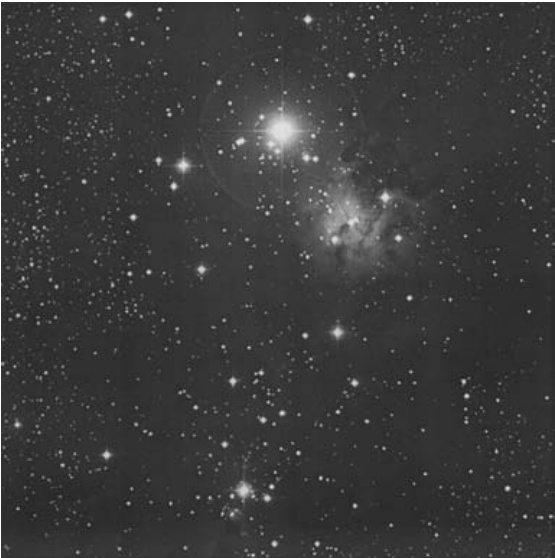

圣诞树星团 · Christmas Tree Cluster (NGC 2264)
| 参数 Parameter | 值 Value |
|---|---|
| 类型 Type | 疏散星团与星云 Open Cluster and Nebula |
| 所属星座 Constellation | 麒麟座 Monoceros |
| 赤经 Right Ascension | 06ʰ 41.0ᵐ |
| 赤纬 Declination | +09° 54′ |
| 视星等 Magnitude | 4.4（奥马拉）/ 4.1 |
| 视直径 Apparent Diameter | 40.0′ |
| 距离 Distance | 2,500 光年 light-years |
| 发现者 Discoverer | 威廉·赫歇尔，1784 William Herschel, 1784 |
NGC 2264 is an extremely bright and extremely obvious open star cluster in Monoceros – one visible to the naked eye and well resolved in binoculars. Miraculously, it escaped the gaze of every observational astronomer until 1784, when William Herschel chanced upon it during one of his sweeps for new celestial objects.
NGC 2264是麒麟座中一个极其明亮且显眼的疏散星团——肉眼可见，双筒望远镜下清晰可辨。令人惊奇的是，在1784年威廉·赫歇尔搜寻新天体时偶然发现它之前，所有观测天文学家都未曾注意到它的存在。
To this day, NGC 2264 is greatly overshadowed by its equally stunning neighbor NGC 2237–8,46, the renowned Rosette Nebula (Caldwell 49), and its associated open cluster NGC 2244 (Caldwell 50). Even the diminutive, but exceedingly interesting, NGC 2261, Hubble's Variable Nebula (Caldwell 46), made it into Patrick Moore's Caldwell list. But NGC 2264 did not.
时至今日，NGC 2264仍被其同样惊艳的邻居NGC 2237-8,46（著名的玫瑰星云Caldwell 49）及其伴生疏散星团NGC 2244（Caldwell 50）的光芒所掩盖。就连微小却极其有趣的NGC 2261——哈勃变光星云（Caldwell 46）也入选了帕特里克·摩尔的Caldwell列表，而NGC 2264却未能上榜。
The irony: to find Hubble's Variable Nebula, most observers star hop to it from 5th-magnitude 15 Monocerotis, the head of Monoceros, the mythical Unicorn, and brightest star in NGC 2264. For these reasons, NGC 2264 is one of the classic hidden treasures.
颇具讽刺意味的是：大多数观测者通过5等星麒麟座15（NGC 2264中最亮的恒星，象征神话独角兽的头部）进行星桥法定位，才能找到哈勃变光星云。正因如此，NGC 2264堪称经典的隐藏宝藏之一。

历史发现 Historical Discovery
When William Herschel discovered the cluster on January 18, 1784, he did not notice any nebulosity. But when he encountered this coarse scattering of stars again on December 26, 1785, he noticed that they "are involved with extremely faint milky nebulosity which loses itself imperceptibly."
1784年1月18日，威廉·赫歇尔发现该星团时并未观测到任何星云状物质。但在1785年12月26日再次遇见这组稀疏分布的恒星时，他注意到它们"被极其微弱的乳白色星云包裹，这种星云物质以难以察觉的方式逐渐消散"。
赫歇尔：[1784年1月18日观测] 双星系统，周围伴有超过30颗显著[明亮]的恒星。（H VIII-5）
Herschel: [Observed January 18, 1784] Double and attended by more than 30 considerably [bright] stars. (H VIII-5)
He cataloged the nebula (H V-27) separately from the cluster (H VIII-5). The history behind these objects got lost when William's son John decided to list the cluster and the nebula under a single listing (h 401) in his original observations, and as GC 1140 in his 1864 General Catalogue of Nebulae.
他将星云（H V-27）与星团（H VIII-5）分别编入不同目录。当威廉之子约翰·赫歇尔在其原始观测记录中将星团与星云合并列为单一条目（h 401），并于1864年《星云总表》中编为GC 1140时，这两个天体的历史渊源就此湯没。
When Johann Louis Emil Dreyer published a modified version of the General Catalogue, which he called the New General Catalogue, he followed John Herschel and listed both the nebula and the cluster as a single object – NGC 2264.
后来约翰·路易斯·埃米尔·德雷尔出版修订版《星云总表》（即《星云和星团新总表》）时，沿袭约翰·赫歇尔的做法，将星云与星团合并列为单一天体——NGC 2264。
恒星形成区 Star-Forming Region
Today we know the Christmas Tree Cluster and the "faint milky nebulosity" is only part of a much larger star-forming region some 3 to 30 million years young. The Christmas Tree Cluster alone extends across more than 30 light-years of space.
如今我们已知，圣诞树星团及其"暗淡的银河状星云"仅是一个约300万至3000万年历史的巨大恒星形成区的一部分。仅圣诞树星团就横跨超过30光年的空间。
If this region dates to 3 million years, it was born when tectonic forces formed the Dead Sea (the lowest point on Earth), and when a female hominid we've named "Lucy" hit the ground walking (on two legs instead of four) in the Laetoli plains of northern Tanzania.
若该区域形成于300万年前，其诞生之际正值构造运动形成死海（地球最低点）之时，亦是被我们命名为"露西"的雌性古猿在坦桑尼亚北部莱托利平原开始双足行走（而非四足）之际。
If the star-forming region dates to 30 million years, then it emerged just as the first hummingbirds began savoring nectar in the flowers of Europe.
若该恒星形成区可追溯至3000万年前，则其诞生之时恰逢首批蜂鸟开始在欧洲的花丛中啜饮花蜜。
In long-exposure color photographs and CCD images, the cluster is surrounded by a symphony of nebulosity whose bright and dark folds seem to ripple across space like visible sound waves.
在长时间曝光的彩色照片和CCD图像中，这个星团被一片星云的交响乐所环绕，其明暗交织的褶皱如同可见的声波在太空中荡漾。
Some of the wispy tendrils of nebulosity are Herbig–Haro objects, jets of matter ejected from newly formed stars still hidden within the nebula.
某些纤细的星云丝状结构实为赫比格-哈罗天体，是从仍隐藏在星云内部的新生恒星喷发出的物质喷流。
Indeed, while about 250, mainly Type O and B, stars can be seen populating this bubbling cauldron of vapors, around 360 near-infrared sources are believed to be forming an embedded cluster in the giant molecular cloud complex behind the obscuring veils of dust.
事实上，虽然可见约250颗（主要为O型和B型）恒星散布于这片翻腾的气态熔炉中，但据信还有约360个近红外源正在尘埃遮蔽幕后的巨型分子云复合体中形成一个嵌入式星团。
上帝御座 The Cone Nebula Connection
NGC 2264 is at the core of the Monoceros OB1 Association (Mon R1), where a well-defined clustering of reflection nebulae lies at the same distance as the association. The region also includes the majestic, though dark, Cone Nebula
🔒 受限于篇幅，本文仅展示部分样章。O'Meara 先生完整的观测手记、实测数据及未公开的独家配图，请参阅原著双语典藏版。
👉 立即在闲鱼获取《DEEP-SKY COMPANIONS》中英双语高清典藏版